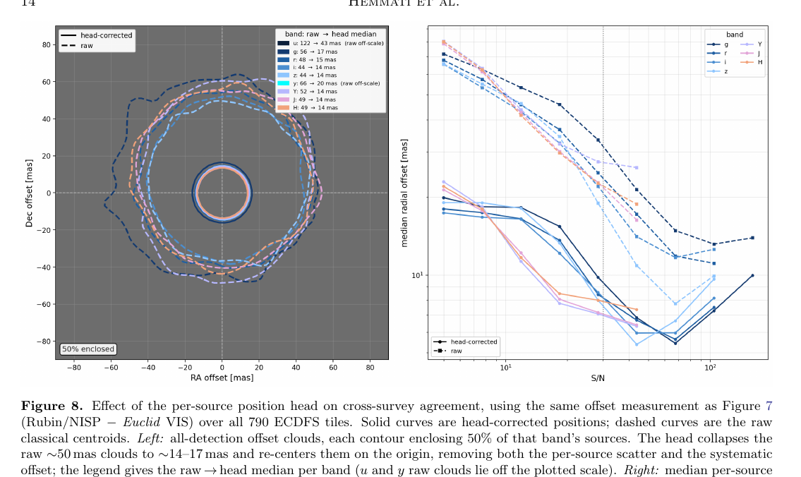
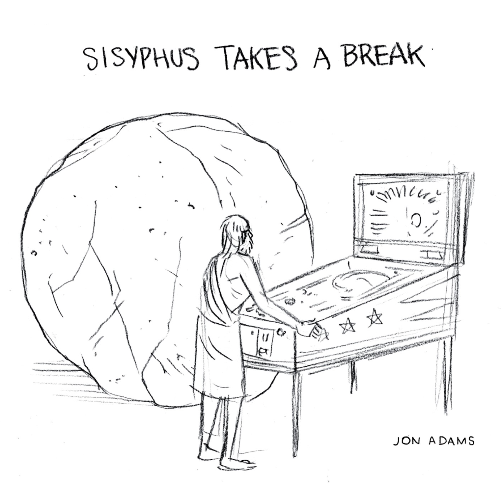

Sisyphus, Optimizing in a Dynamic Universe
Information theory, from brains to models of the sky
Shoubaneh Hemmati — Caltech/IPAC
Constant optimization — pushing a rock up a hill, forever.
- Good enough? answered the question = minimized the loss = reached this hill’s top
- ask a new question → a new hill
- or die on that hill :D
- Not constraining enough?
- a better question — change the loss, change the hill
- the same data, a better compression — the information was there all along
- more data — but really: more information — distance · resolution · depth · coverage
- or die on the slope :D
This outline is itself a compression of the talk. Whether it is lossless depends on what you ask of it — so let’s zoom in.
Information is always information about a question.
One loop, three scales: a stranger you just met · a source on the joint Rubin–Euclid sky · a foundation model of both surveys (JAISP).
By the end, a measurable claim: how much astrometric information survives each layer of a learned representation?
Every inquiry begins with a question.
Who are they? Interesting? Trustworthy? Reliable? What should I expect from them?
Where is this source? θ = (x, y) — reached only through pixels, PSFs, noise, calibration.
The question decides which parts of reality are signal and which are nuisance.
Different stakes. Suspiciously similar machinery.
What matters → an objective
question → values → utility → loss / metric / distance
A football conversation is rich evidence for humor and flow — nearly useless for reliability under pressure.
What must be preserved: morphology, PSF, centroid shifts, subpixel information, WCS.
Change the ruler, change the landscape.
- The metric defines what “closer to the answer” means — the geometry of the hill.
- Optimization is movement through that geometry.
- A model can numerically converge while the scientific answer stays weakly constrained.
Convergence of the optimizer is not convergence of inquiry.
We never see θ. We see what it generates.
words · tone · actions · promises · how they treat others · behavior under stress · repeated encounters
Rubin pixels · Euclid pixels · multiple bands · PSFs · noise maps · sampling · WCS
mood · setting · self-presentation · strategic behavior · stereotypes · memory · projection
photon noise · blending · chromatic morphology · PSF variation · resampling · detector effects · background
p(D | θ, context, observer, action)
The observer is not passive: probing a person changes their behavior — and θ itself may be θ(t, context, relationship).
A model connects data to what we care about.
traits, intentions, expectations, context-dependence — prior beliefs, new observations, revised beliefs.
p(D | θ) with θ = (x, y) · or learned: D → z → θ̂
A structural analogy only — no claim that the brain literally runs Bayesian inference.
We cannot carry everything forward. So we compress.
D → T(D)
T(D) may be: a statistic · a catalog entry · a centroid · a latent vector · a posterior · a first impression.
Different questions may require different compressions of the same data.
I(T(D); θ) = I(D; θ) yet I(T(D); φ) < I(D; φ)
Lossy with respect to the data can still be lossless with respect to the question.
A sufficient statistic for θ may silently destroy everything about φ.
Hundreds of observations collapse to “nice.”
- Enough for: “would I enjoy another coffee with them?”
- Hopeless for: “would I trust them with something important?”
- The clues may already be in memory — reweight the evidence, rebuild the summary.
No new data required — a new compression of the old data.
An answer — with a width.
A posterior, or a learned estimator, yields the quantity and its remaining uncertainty.
A number without its width is not an answer. Which raises the question: how do we talk about what we know?
How uncertain am I?
Broad posterior — much still possible. Narrow posterior — little room left.
A confident first impression can be flatly wrong: bias, overconfidence, the wrong model class.
A tight error bar can be wrong: biased calibration, omitted systematics, miscalibrated learned uncertainty.
Low entropy is not truth. We can be confidently wrong.
How unexpected was this?
s(D) = −log p(D)
The quiet, restrained person does something wildly out of character.
An observation lands far from what source + calibration + model predict.
Surprise is not information gain — a bizarre datum can teach you nothing about θ.
How much did I learn?
DKL[ p(θ | D) ‖ p(θ) ]
Not “was the observation unexpected?” but “how much did it move what I believe about the thing I care about?”
Where is the hill steep?
If the true parameter moved slightly, how strongly would the observable distribution change?
- High Fisher: steep likelihood — the parameter can be pinned down.
- Low Fisher: flat direction — degeneracy, weak sensitivity.
In the mountain metaphor: Fisher is the local curvature of the hill.
F ≈ diag( 1/σx², 1/σy² ) ⇒ F ∝ 1/σpos²
More photons, sharper PSF, better sampling → a steeper hill. Astrometry is the cleanest first example.
On the human side, keep it qualitative: which interaction is diagnostic for the trait you care about?
- Entropy — how uncertain am I?
- Surprise — how unexpected was this observation?
- KL — how much did I learn?
- Fisher — where is the hill steep?
Is the answer good enough?
Yes — use it; stop; or ask the next question: new objective, new loss, new compression, new readout.
A new question does not necessarily require new data.
No — then diagnose why. Three fundamentally different failures →
If yes: die on that hill :D
Not constraining enough — why?
A · wrong ruler
The question, metric, or loss is inadequate. Fixing it changes the landscape itself.
B · bad compression
The information exists in the data — the representation destroyed or hid it.
C · missing information
The data genuinely do not contain it. Only new observations can help.
- Ask a better question; redefine utility.
- Change the loss, the metric, the notion of distance.
- Reconsider which information counts as relevant at all.
You are not moving on the landscape — you are exchanging it for another.
- The signal was discarded, averaged away, or buried.
- Recompress: a different statistic, another readout, a step back toward the raw data.
No new observation required. This branch is where foundation models live.
- More depth, resolution, area, S/N.
- Another wavelength, modality, epoch, vantage point, instrument.
Which observation, exactly? That is a design question →
Which observation teaches me the most?
More data is not automatically more information.
EIG(d) = 𝔼y DKL[ p(θ | y, d) ‖ p(θ) ]
Maximize expected information gain — equivalently, expected reduction in posterior entropy; a Fisher criterion in the Gaussian limit.
Another hour of small talk ≈ nothing. Responsibility, disagreement, stress, cooperation ≫. And probing changes the interaction — ethics bind the design.
More photons, sharper PSF, better sampling, another epoch, another instrument. A little high-resolution can beat a mountain of low-resolution photons.
Datasets can lend information to each other.
One experiment may carry information about a quantity that another experiment measures poorly.
The question becomes: where in the pipeline do you let them meet?
Work, friendship, stress, family, conflict, play — heterogeneous observations of the same latent person: different noise, different selection effects.
D₁, D₂, D₃, … → one shared latent model of the person
Not: reduce each context to a label, then compare labels.
DR → CR, DE → CE, then CR + CE — each already lossy
(DR, DE) → Zjoint → measurement
Compress the shared reality, not each instrument separately.
Joint inference
Both carry information about θ: Fjoint = FR + FE (conditionally independent).
Information transfer
Euclid VIS sharpness improves measurements tied to Rubin bands.
Information completion
Masked-band reconstruction infers weakly observed structure from correlated channels.
The cost of rebuilding
If every new question means a new compression learned from raw pixels, the cost is enormous.
Can we learn a compression that survives changes in the question?
Not lossless — broadly reusable: a minimally task-specific compression for questions not yet asked.
We do not keep separate mental databases for “person for football,” “person for advice,” “person for trust.”
One rich representation — interrogated differently per question. A future question can expose it as too compressed, biased, incomplete: re-evaluate, re-weight, or go gather more.
Learn once, interrogate per question.

10 bands — Rubin ugrizy (0.2″/px) + Euclid VIS·Y·J·H (0.1″/px) → two-stream ConvNeXt stems → shared transformer latent, trained by masked-band autoencoding; frozen encoder → detection · astrometry · photometry · shape · redshift heads.

Cross-survey offsets over 790 ECDFS tiles: the position head collapses raw ~50 mas offset clouds to ~14–17 mas, re-centered on the origin — high-resolution VIS localization transferred through the shared latent.
Fpixels → Fstems → Ffused → Fhead
- Inject sources at known (x, y); perturb ±δx, ±δy; repeat noise realizations.
- Measure the response at every stage: Fz = Jzᵀ Cz⁻¹ Jz, Jz = ∂⟨z⟩/∂(x,y).
- F drops → the compression discarded astrometric information. Ffused ≈ Fpixels → effectively lossless for astrometry.
Hypothesis until measured: FRubin < Ffused ≲ FVIS. Then repeat for photometry, shape, redshift.
Sometimes the hill itself moves.
- A person changes, reacts, learns, performs, adapts to the observer.
- Even the “static” example moves: proper motion across Rubin’s decade of epochs.
- New instruments, new surveys, new questions — the landscape is redrawn under your feet.
The optimizer is not merely climbing a difficult hill. The hill is dynamic.
Die on the hill · die on the slope
On the hill — the answer sufficed for the question. Stop, or ask the next one.
On the slope — uncertainty remains, the theory is incomplete, the experiment outlives you. The search for a final theory, half in longing, half in mourning.
Finite observers inside open-ended inquiry.

…and starts the game.
cartoon: Jon Adams
Maybe the rock comes back because we keep finding better questions.
One must imagine Sisyphus happy.